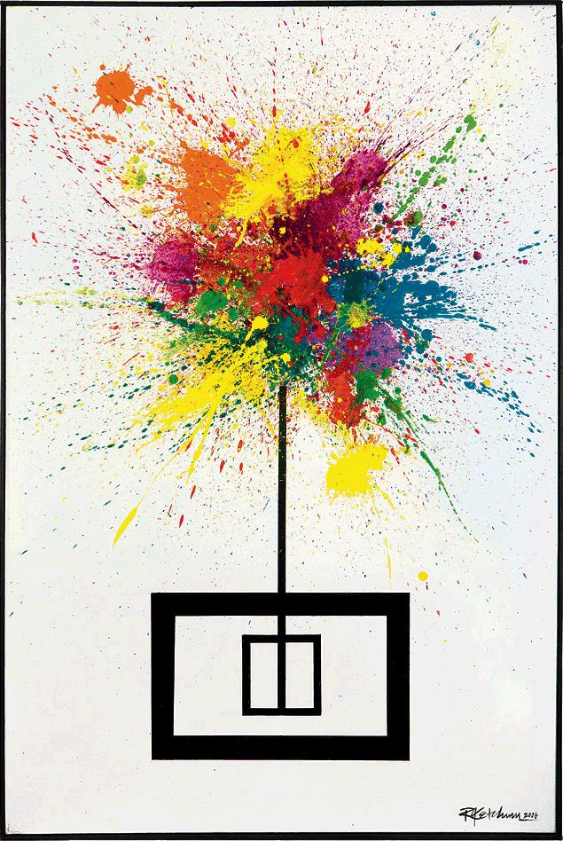
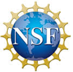
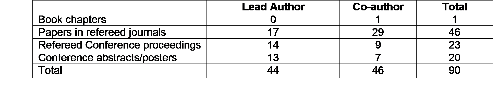

Guohua Cao
I am an Assistant Professor at Virginia Polytechnic Institute and State University (Virginia Tech), and the Founder and President of ImagingX Inc. My research interests are Biomedical Imaging, Artificial Intelligence, Deep Learning, X-ray/CT/Micro-CT/Nano-CT, Novel X-ray Source and System, and Imaging Applications in Cancer/Stroke/COVID-19/Cardiovascular Disease.
RESUME
Education/Training
University of Science and Technology of China
Brown University
Brown University
University of North Carolina at Chapel Hill
Appointments
Research Assistant Professor
Tenure-track Assistant Professor
Adjunct Faculty
Adjunct Faculty
Program in Translational Biology, Medicine, and Health, Virginia Tech, Blacksburg, VA
Founder and President
Visiting Scientist
Awards
- Best Poster Award, NCI Nanotechnology Alliance Investigators Meeting, 2007
- UNC Postdoctoral Award for Research Excellence, 2008
- Honorable Mention Poster Award, SPIE-Medical Imaging Conference, 2009
- Best in Physics Poster Award, The Joint AAPM and COMP Meeting, 2011
- NSF CAREER Award, 2014
- Scholar of the Week, Virginia Tech, 2014
- Innovator of the Month, Virginia Tech, 2016
- Best Paper Award, 20th International Conf. on Medical and Biomedical Engineering, 2018
Research
My research interest is devoted toward X-ray based biomedical imaging. Biomedical imaging is the science and technology underlying the acquisition, reconstruction, processing, and interpretation of biological objects. My current research is focused at novel X-ray sources, detectors, signal processing, image reconstruction algorithms, and systems engineering. Speaking more broadly, my interest in biomedical imaging has brought me to delve deeper into research topics that span both basic and applied research in physical chemistry, applied physics, material science, mechanical engineering, electrical and computer enginnering, medical imaging, and medical physics. One unifying motivation is to empower scientists, engineers, and clinicians with cutting-edge imaging tools for biomedical discovery, diagnosis, and intervention. For instance, my current research goal is to develop next-generation x-ray imaging technologies that are safer, faster, compact, portable, flexible, smart and connected. Please see my Curriculum Vitae for a complete picture.
Select Topics
- Deep-learning algorithms for CT image formation and processing, 2016-present
- Stationary CT system architecture, 2011-present
- Design, development, and validation of an interior 5D micro-CT scanner for arteriosclerosis characterization, 2014-2020
- Spectral x-ray imaging for enhanced material characterization, 2013-2018
- X-ray fluorescence molecualr imaging, 2011-2013
- Microbeam radition therapy based on carbon nanotube x-ray source, 2009-2011
- Development of a carbon nanotube dynamic-micro-CT system for dynamic micro-CT imaging of small animals, 2007-2011
- Development of a first-generation digital stationary breast tomosynthesis system, 2007-2011
- Carbon nanotube X-ray source design, fabrication, testing, and application, 2007-2011
- Ultrasound-modulated, propogation-based in-line X-ray phase contrast imaging of biological tissues, 2005-2006
- Laser enhancement of single-bubble sonoluminescence, to investigate the possibility of cold fusion in a bubble (PhD project), 2002-2005
- Gigantic photoacoustic effect from the interaction of nanosecond Nd:YAG laser with carbon particle suspension, 2001-2002
- Ultrafast x-ray generation from intense and femtosecond laser ablation of mercury target, for the purpose of probing chemical molecular reactions with femtosecond speed, 1999-2001
- Synthesis of carbon nanotubes through the sol-gel process, 1998-1999
Research Funding
- 

PUBLICATIONS
Please see my complete list of publications at
TEACHING
Philosophy of Teaching Statement
Professor teaches! The nature of our profession comprises not only research but also teaching. Teaching has its own particular requirements that must be satisfied. And it demands different skill sets. For instance, teaching could be carried out solely relying on funding through the university. Research, in contrast, usually requires substantial external funding. Nevertheless, at universities the separation of teaching and research would be fundamentally flawed. Teaching doesn't stop after a professor leaves the classroom but continues in the laboratory. Teaching is present in the research process when a professor guides students. And teaching is in action when a professor shares knowledge with peers.
One major lesson I have learned from the past teaching is that not everyone shares my passion in rigorous, sometimes meticulous, approach in pursuing the underlying principles of practical problems. So I have come to realize that I should always emphasize the understanding of concepts with an intuitive basis in physical reality. Speaking more broadly, students take classes and go for graduate schools for a variety of reasons, and many of students are not continuing in the hard sciences. To teach more effectively, we should be sensitive and understanding to this broad spectrum of motivations, and do our best to reach our common goal - the search for scientific truth and the push for intellectual innovation. This is especially true in a culturally diverse environment and a multidisciplinary field. We should be more aware of our assumptions made on students when choosing a specific way to teach in a classroom, and choose different approaches to reach students who have a variety of experiences and backgrounds..
I found learning what motivate the students and aligning their project to be consistent with their future goals is crucial to their success. With this main direction in mind, it is important to make the necessary resources accessible to students and allow them to solve problems themselves in a relatively free environment while inspiring them along the way, and challenging them to improve on their weaknesses no matter how much resistance and reluctance you may receive at first. Sensitivity and understanding are certainly among the most important traits an advisor must have. Equally important for a professor is to excel in his or her research in order to foster an academic environment in which students can grow.
Based on my past teaching/mentoring experiences first as a graduate student then as a scholar, I believe teaching and research are mutually beneficial. Teaching stimulates research - research influences teaching. Teaching and research together form an integrated academic environment. For a professor it is important to create for students an environment that fosters both research and learning.
Courses Taught
- (Self-Developed) BMES 3134 - "Introduction to Biomedical Imaging", Virginia Tech
- (Self-Developed) BMES 5984 - "Radiation in Imaging and Therapy", Virginia Tech
- BMES 6514 - "Medical Imaging II", Virginia Tech
- TBMH 5024 - "Fundamentals of Cancer", Virginia Tech
- BMES 5054 - "Quantitative Cell Physiology", School of Biomedical Engineering and Sciences, Virginia Tech - Wake Forest University
- MSTC 735 - "Techniques in Materials Characterization", Curriculum in Applied and Materials Sciences, University of North Carolina at Chapel Hill
- CH 116 - "Physical Chemistry Laboratory", Department of Chemistry, Brown University
SERVICE
Outreach Activities (Selected)
- Moderator on Panel “BME Careers: alternative careers” at the Southeast Biomedical Engineering Career Conference, Washington DC. October 28, 2011.
- Engaging in public media for reports on the candidate’s work.
- Industry consulting/collaborations and technology commercialization.
- Active participation in Virginia Tech’s Inclusive VT, CEED/STEP programs.
- Active recruiter and mentor for female and underrepresented engineering students.
Professional Service (Selected)
- 2012 – present, mail reviewer for NSF CREST, EPSCoR, Smart and Connected Health, MPS/PHY programs.
- 2014 – present, Panelist for NSF Major Research Instrument (MRI) program.
- 2017-2019, Panelist for NSF Graduate Research Fellowship Program Panel (GRFP).
- Chair of the “CT, PET and SPECT” session, Biomedical Engineering Society (BMES) Annual Conference, Tampa, Florida. October 2015.
- Journal Reviewer for IEEE Trans. Medical Imaging, Medical Physics, Physics in Medicine and Biology, Scientific Report, etc.
- X-ray imaging consulting and service to 50+ investigators at Virginia Tech, other universities and industries.